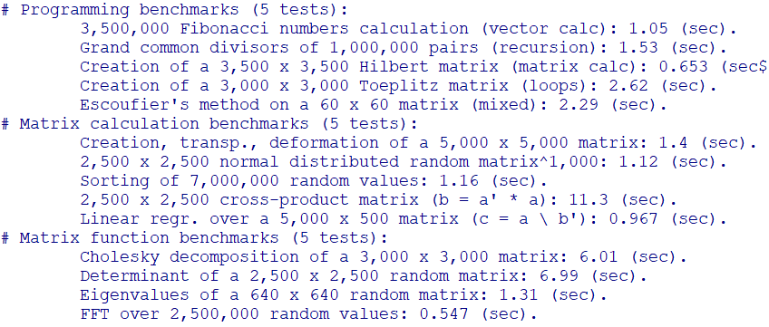
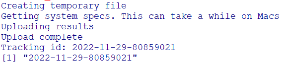
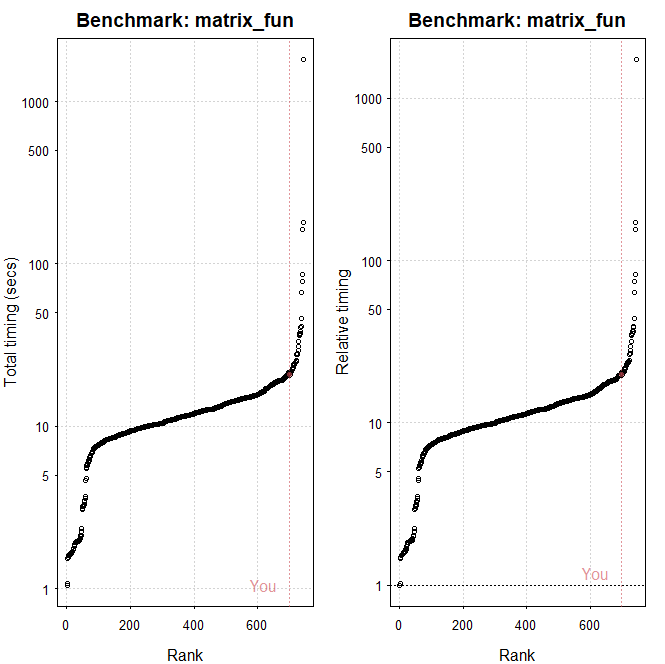

In this article, we see how to perform CPU comparison with popular benchmarks. To this end, following lines should be executed to install benchmark. 1. In R GUI, install.packages("benchmarkme") 2. Load library, library("benchmarkme") To perform Standard benchmark use following command: res = benchmark_std()
In total, 15 test will be completed as follows: To see the order of your CPU, use the following command.
upload_results(res)After that, you will get a message about the benchmark as follows:
The following command draw the order of your test as below:
 Further, you can get platform information where you are running on as below:
get_platform_info()